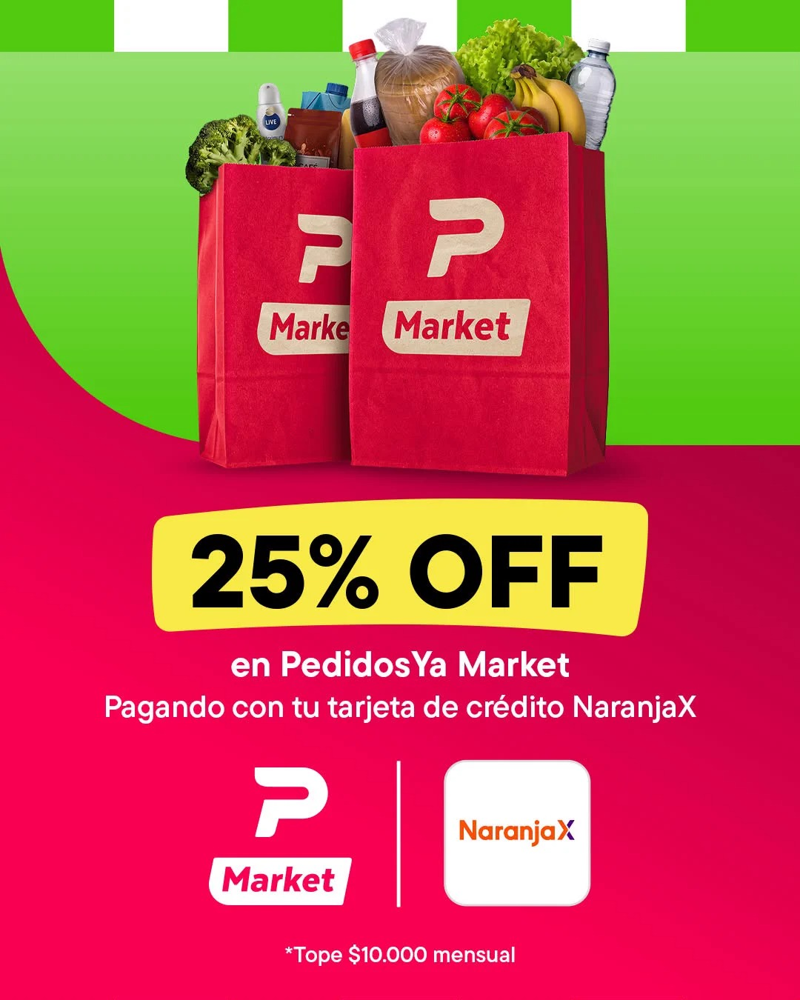
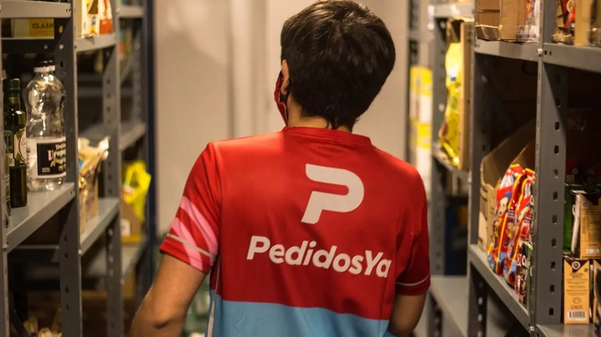

Variables Geográficas:
Cobertura Urbana: Centros urbanos, capitales y municipios de media y alta densidad poblacional en Argentina y Latinoamérica.
Introducción
Pedidos Ya es una plataforma de delivery que conecta consumidores con establecimientos como restaurantes, supermercados, farmacias, kioscos y comercios varios. En el mercado local, la plataforma aplica estrategias claras de Producto, Precio, Plaza y Promoción, en los cuales va a buscar diferenciarse por conveniencia, rapidez y variedad.
1 Responsable: Ivan
¿Cómo lo gestiona Pedidos Ya?
Dentro de su cartera de productos, podemos encontrar en la aplicación:
La diferenciación con la que la marca busca destacarse se basa en brindar un servicio de entregas rápidas, seguimiento en tiempo real de los pedidos y accesibilidad a múltiples métodos de pago, incluyendo tarjetas de crédito, débito, efectivo y carga de saldo dentro de la aplicación, esta última opción también disponible como beneficio corporativo. Asimismo, ofrece su suscripción Pedidos Ya Plus, que brinda beneficios exclusivos, como envío gratis en la gran mayoría de los locales asociados y descuentos en productos seleccionados de cada establecimiento.
La marca, en sí misma, posee una identidad visual muy reconocible y establecida en nuestro país, ya que logró posicionarse fuertemente en el mercado gracias a factores como la rapidez de las entregas, la comodidad en el uso del servicio y la amplia disponibilidad de comercios y productos.
La presentación de la plataforma se realiza a través de la aplicación para dispositivos móviles y también mediante su página web. Ambas presentan una interfaz simple e intuitiva, en la que se pueden visualizar los locales disponibles según la ubicación del cliente. Asimismo, permite observar la calificación general de cada establecimiento, basada en las opiniones y experiencias de los usuarios, junto con los tiempos estimados de entrega de cada pedido. De esta manera, la plataforma facilita la navegación y el proceso de selección y compra por parte del consumidor.
Pedidos Ya amplió su propuesta de valor al incorporar supermercados, farmacias y otros comercios dentro de una misma aplicación. Además, la incorporación de la suscripción Pedidos Ya Plus y el seguimiento en tiempo real de los pedidos contribuyeron a mejorar la experiencia del usuario, incrementando la comodidad y fortaleciendo la fidelización de los clientes.

Incorporación de supermercados y farmacias
Permite resolver múltiples necesidades desde una sola aplicación.
Membresía “Pedidos Ya Plus”
Fideliza clientes mediante envíos gratuitos y descuentos exclusivos.
Seguimiento del repartidor en tiempo real
Reduce la incertidumbre y mejora la experiencia de compra.
El precio es el único elemento del marketing mix que genera ingresos y puede modificarse rápidamente.
Pedidos Ya utiliza una estrategia de precio dinámico, adaptándose a la demanda, la distancia y la competencia.
Los factores que influyen en el precio son los siguientes:
Costo de distribución: El envío puede variar según la distancia y la disponibilidad de los repartidores.
Competencia entre comercios: Cada local define sus precios y promociones dentro de la plataforma.
Estrategias promocionales: como por ejemplo cupones, descuentos bancarios, y ofertas temporales, las cuales modifican el precio final.
Objetivo Comercial: Captar nuevos usuarios y aumentar la frecuencia de compra de los mismos.
Cupones de bienvenida
Incentiva la/s primera/s compra/s
Descuentos con bancos y billeteras
Disminuye el precio percibido y aumenta las ventas.
Envíos gratis con Plus
Motiva la suscripción y la recompra frecuente.
Promociones por horario
Incrementa pedidos en momentos de menor frecuencia
La plaza y/o distribución consiste en hacer llegar el producto al consumidor de manera eficiente.
Los 4 elementos de la distribución:
Restaurantes, supermercados y comercios asociados venden al consumidor mediante la plataforma, mientras repartidores independientes realizan la entrega.
La app asigna automáticamente el repartidor más conveniente según ubicación, demanda y tiempos estimados.
Utiliza dark stores y centros logísticos para Pedidos Ya Market, permitiendo entregas en pocos minutos en muchas ciudades.
Los comercios destacan productos mediante banners, categorías, fotografías y posiciones preferenciales dentro de la aplicación.
Cobertura en numerosas ciudades argentinas
Mayor accesibilidad al servicio.
Pedidos Ya Market
Compras de supermercado con entregas muy rápidas.
Recomendaciones según ubicación
Facilita encontrar opciones cercanas y reduce tiempos de entrega.
La promoción busca comunicar los beneficios del producto y estimular la compra.
Las principales estrategias promocionales que se usan como herramientas de comunicación son las siguientes:
Campañas en televisión, YouTube, Instagram, TikTok y vía pública con foco en rapidez y comodidad.
La aplicación envía ofertas basadas en hábitos de consumo y horarios del usuario.
2x1, descuentos porcentuales, envío gratis y beneficios exclusivos para usuarios Plus.
Acuerdos con bancos, tarjetas y billeteras virtuales para ofrecer reintegros y descuentos.
Cupones personalizados
Aumenta la probabilidad de compra.
Campañas en redes sociales
Mantiene en constante visualización la marca en sí.
Beneficios con bancos
Genera percepción de ahorro y favorece la elección de Pedidos Ya.
2 Responsable: Esmeralda
Una de las principales fortalezas de PedidosYa es que cuenta con una plataforma tecnológica que permite conectar a los consumidores con diferentes comercios y gestionar los pedidos. Además, la empresa cuenta con una red de repartidores para realizar las entregas, por lo que los comercios pueden utilizar este servicio sin tener que desarrollar por su cuenta toda una estructura de delivery.
Esto representa una ventaja tanto para PedidosYa como para los comercios asociados, ya que permite centralizar en una misma plataforma la recepción de pedidos, la gestión de productos y parte del proceso de entrega. La empresa también ofrece herramientas para que los comercios puedan administrar su negocio dentro de la plataforma.
Otra fortaleza es la variedad de opciones que ofrece la plataforma. PedidosYa no se limita únicamente a restaurantes, sino que también permite realizar pedidos de distintos tipos de productos y comercios.
Esta variedad hace que el usuario pueda utilizar la aplicación para diferentes necesidades y no solamente para pedir comida. Desde el punto de vista de la empresa, esto permite ampliar las situaciones en las que una persona puede recurrir a la plataforma.
PedidosYa ofrece a sus comercios un Portal de Socios, desde el cual pueden administrar información de su negocio, modificar precios y productos, consultar estadísticas de ventas, gestionar promociones y recibir asistencia. También ofrece herramientas de publicidad dentro de la aplicación para aumentar la visibilidad de los comercios.
Esto representa una fortaleza porque PedidosYa no solamente funciona como un medio para recibir pedidos, sino que también brinda herramientas que ayudan a los comercios a gestionar y promocionar sus productos dentro del entorno digital.
La plataforma puede utilizarse para distintos tipos de compras y cuenta con diferentes modalidades de entrega y pago. Además, PedidosYa permite que determinados comercios funcionen exclusivamente mediante delivery, sin necesidad de contar con un salón abierto al público.
Esto le permite adaptarse a diferentes modelos de negocio y ampliar las posibilidades de participación de comercios que buscan vender principalmente por canales digitales.
Una de las debilidades de este tipo de negocio es que la experiencia final depende de que varias partes funcionen correctamente al mismo tiempo: la aplicación, el comercio, la preparación del pedido y la entrega.
Por ejemplo, si un comercio demora en aceptar o preparar un pedido, o si existe un problema durante la entrega, el usuario puede terminar teniendo una experiencia negativa aunque la aplicación haya funcionado correctamente. La propia PedidosYa establece procedimientos relacionados con pedidos demorados, incompletos o equivocados.
PedidosYa conecta a los consumidores con comercios independientes, por lo que una parte importante de la calidad del servicio depende también de estos establecimientos.
El comercio es quien informa los productos, precios y características del pedido y, dependiendo de la modalidad utilizada, puede ser también quien se encargue de la entrega. Por lo tanto, la empresa no controla de manera directa todos los aspectos de la experiencia del consumidor.
El modelo de PedidosYa funciona mediante el cobro de una comisión a los comercios por los pedidos realizados a través de la plataforma. La propia empresa explica que esta comisión contribuye a cubrir servicios como la logística, la tecnología y las acciones de marketing, aunque las tarifas pueden variar según el tipo de socio, su ubicación y las condiciones del mercado.
Esto puede representar una dificultad para algunos comercios, especialmente para aquellos que trabajan con márgenes de ganancia reducidos, ya que deben considerar este costo dentro de su estructura de precios.
Al tratarse de una plataforma digital, PedidosYa depende del correcto funcionamiento de la aplicación, los sistemas de pago, la conexión a Internet y los dispositivos utilizados por los comercios y repartidores.
Por ejemplo, la propia empresa establece que los comercios necesitan contar con conexión a Internet y un dispositivo para recibir los pedidos.
Por lo tanto, una falla tecnológica o un problema de conectividad puede afectar el funcionamiento de diferentes partes de la operación.
El crecimiento del comercio electrónico representa una oportunidad importante para PedidosYa. Según la Cámara Argentina de Comercio Electrónico (CACE), durante el primer semestre de 2026 la facturación del comercio electrónico en Argentina aumentó 28% respecto del mismo período de 2025. Además, se registraron 181,5 millones de órdenes de compra, un 21% más que durante el primer semestre del año anterior.
Este crecimiento muestra que las compras por Internet tienen cada vez mayor presencia en los hábitos de consumo y genera un contexto favorable para las empresas que ofrecen servicios digitales.
Otro aspecto que representa una oportunidad para PedidosYa es el crecimiento de la categoría de Alimentos y Bebidas.
De acuerdo con el estudio de CACE correspondiente al primer semestre de 2026, Alimentos y Bebidas fue el rubro con mayor facturación dentro del comercio electrónico argentino y también ocupó el primer lugar en cantidad de unidades vendidas.
Esto es especialmente relevante para PedidosYa porque la plataforma tiene una fuerte presencia en el pedido y entrega de alimentos. Por lo tanto, el crecimiento de este segmento puede favorecer el desarrollo de la actividad de la empresa.
Los hábitos de los consumidores también representan una oportunidad. CACE informa que durante el primer semestre de 2026 la entrega a domicilio representó el 60% de las modalidades de entrega, mientras que el retiro en el punto de venta representó el 31%.
Esto resulta favorable para PedidosYa porque su propuesta se encuentra directamente relacionada con facilitar la entrega de productos al domicilio del consumidor.
El crecimiento del comercio electrónico también permite que PedidosYa continúe ampliando las categorías de productos y servicios disponibles.
La posibilidad de trabajar con diferentes tipos de comercios permite que la empresa no dependa exclusivamente de los restaurantes y pueda aprovechar nuevas oportunidades dentro del comercio digital.
Una de las principales amenazas para PedidosYa es la existencia de otras plataformas que ofrecen servicios similares. La competencia puede producir una disputa por consumidores, comercios y repartidores, y también generar la necesidad de ofrecer promociones, descuentos y mejoras constantes en el servicio.
Por este motivo, PedidosYa debe mantener una propuesta atractiva para los usuarios y, al mismo tiempo, conservar una relación conveniente para los comercios que forman parte de su plataforma.
El contexto económico puede afectar tanto a los consumidores como a los comercios. Si los consumidores cuentan con menor poder adquisitivo, pueden reducir la frecuencia con la que realizan pedidos o priorizar productos de menor precio.
Al mismo tiempo, los comercios pueden enfrentar aumentos en sus propios costos, lo que puede afectar los precios de los productos ofrecidos mediante la plataforma.
Por lo tanto, los cambios en el contexto económico pueden influir sobre el volumen de pedidos y sobre la rentabilidad de los distintos participantes del sistema.
La situación tributaria también constituye un factor externo a considerar. En abril de 2026, CACE publicó un informe sobre el impacto de los regímenes de retenciones y percepciones de Ingresos Brutos en el comercio electrónico. Según la entidad, la complejidad del sistema puede afectar aspectos como los precios, la liquidez y la competitividad de las empresas que operan formalmente.
Para empresas que forman parte del comercio electrónico, este tipo de condiciones puede representar un desafío adicional para mantener la competitividad y controlar sus costos.
Los consumidores esperan que las compras online sean rápidas, simples y confiables. En el caso de PedidosYa, esto significa que los usuarios esperan recibir el pedido dentro del tiempo informado y que los productos lleguen correctamente.
La propia empresa contempla situaciones como demoras, pedidos incompletos o productos equivocados dentro de sus términos y condiciones.
Por lo tanto, mantener una buena experiencia de usuario representa un desafío permanente, especialmente en un mercado donde existen diferentes alternativas para realizar compras y recibir productos a domicilio.
Oportunidades · datos de la Cámara Argentina de Comercio Electrónico (CACE), primer semestre de 2026
28%
la facturación del comercio electrónico en Argentina aumentó 28% respecto del mismo período de 2025
181,5 millones
de órdenes de compra
21%
más que durante el primer semestre del año anterior
Alimentos y Bebidas fue el rubro con mayor facturación dentro del comercio electrónico argentino y también ocupó el primer lugar en cantidad de unidades vendidas.
3 Responsable: Luciano
PedidosYa utiliza una segmentación multiatributos, combinando simultáneamente variables geográficas, demográficas, psicográficas y conductuales para delimitar los grupos de consumidores en el mercado:
Cobertura Urbana: Centros urbanos, capitales y municipios de media y alta densidad poblacional en Argentina y Latinoamérica.
Edad y Perfil: Hombres y mujeres de 18 a 55 años, abarcando estudiantes universitarios, jóvenes profesionales y adultos trabajadores.
Nivel Socioeconómico y Conectividad: Niveles medio-bajo, medio y alto con acceso a celulares, conexión a internet y medios de pago digitalizados (tarjetas de crédito/débito o billeteras virtuales como PedidosYa Pay).
Estilo de Vida: Consumidores urbanos con un ritmo de vida acelerado, altamente digitalizados, que valoran la practicidad y priorizan ganar tiempo libre por encima del esfuerzo de trasladarse o cocinar.
Beneficio Buscado: Inmediatez, comodidad y resolución urgente de necesidades de consumo diario.
Lealtad: Usuarios retenidos e incentivados mediante descuentos de corto tiempo.
PedidosYa ejecuta su estrategia comercial recorriendo tres etapas operativas:
PedidosYa identifica subgrupos con necesidades específicas dentro del mercado urbano:
Antes de ingresar a un nuevo municipio o abrir una nueva Dark Store, la empresa evalúa:

(Una dark store (o tienda oscura) es un almacén cerrado al público que se dedica exclusivamente a recibir, preparar y enviar los pedidos que los clientes realizan a través de internet)
PedidosYa selecciona el segmento urbano masivo con preferencia por la inmediatez y aplica una estrategia diferenciada por vertical (promociones específicas en restaurantes, alertas de descuento y cupones de bienvenida).
Los segmentos elegidos por PedidosYa cumplen con las cinco condiciones del mercado[3]:
La empresa cuantifica el tamaño y comportamiento de cada segmento en tiempo real mediante métricas internas como descargas de la app, usuarios activos mensuales (MAU), volumen de transacciones por zona y mapas de calor de geolocalización.
Representan una masa crítica urbana con un volumen diario masivo de pedidos que justifica la inversión en infraestructura tecnológica y la red de almacenes dark stores.
PedidosYa contacta directamente a sus segmentos objetivo a través de la aplicación móvil, notificaciones push personalizadas según horarios habituales de consumo y campañas de marketing digital programático.
Los segmentos responden de forma distinta a la propuesta de valor: quien utiliza PedidosYa Market reacciona ante el beneficio de la velocidad (15 minutos), mientras que el usuario de restaurantes responde a la variedad de la oferta o a promociones de precio (Pido sin pensar).
Permiten diseñar acciones comerciales concretas, tales como lanzar cupones de descuento para reactivar usuarios inactivos, ofrecer envíos gratis a través de PedidosYa Plus o crear promociones en franjas horarias específicas (almuerzo o cena)
4 Responsable: René
COMERCIALIZACIÓN INTERNACIONAL
POSICIONAMIENTO Y NICHOS DE MERCADO
PEDIDOSYA
Punto 4Concepto utilizado para analizar a PedidosYa.
Según el material de clase, posicionar una marca significa lograr que ocupe un lugar privilegiado y relevante en la mente del consumidor.
Para conseguirlo, la empresa debe diferenciarse y construir una ventaja competitiva que el cliente pueda percibir y valorar.
Por eso, no alcanza con que una empresa tenga buenos recursos: esos recursos tienen que transformarse en beneficios claros para el consumidor.
Material de clase: Segmentación & Posicionamiento, págs. 8 y 18.
¿Qué idea busca instalar la marca en la mente del consumidor?
PedidosYa se relaciona principalmente con RAPIDEZ, COMODIDAD y SIMPLICIDAD.
Resolver una necesidad sin tener que trasladarse.
Comprar desde el celular y ahorrar tiempo.
Buscar, pedir, pagar y seguir la compra desde una misma plataforma.
En síntesis: PedidosYa busca ser percibida como una solución práctica para resolver necesidades cotidianas.
Análisis aplicado a partir de la teoría vista en clase.
Aplicación de los tipos estudiados en clase.
El beneficio principal es ahorrar tiempo y esfuerzo.
La plataforma aparece en situaciones concretas: pedir comida, hacer una compra o resolver una necesidad desde casa.
Busca diferenciarse por la combinación de rapidez, variedad y experiencia digital.
Material de clase: estrategias de posicionamiento, págs. 12 a 16.
Una diferencia importante: no todo segmento es un nicho.
Un nicho es una parte más específica de un segmento, formada por consumidores con necesidades o deseos particulares.
PedidosYa tiene un mercado amplio, pero dentro de ese mercado atiende necesidades más concretas.
Material de clase: definición de nicho de mercado, pág. 10.
La diferencia no depende de una sola característica.
Integra restaurantes, supermercados y otras categorías dentro de una misma plataforma.
La experiencia digital permite buscar, comprar, pagar y seguir el pedido.
La entrega convierte una compra digital en una solución concreta para el usuario.
Los comercios asociados amplían la oferta disponible y las ocasiones de uso.
Síntesis del análisis competitivo aplicado a PedidosYa.
PedidosYa no busca ser recordada solamente como una app de delivery.
Su posicionamiento está asociado a resolver necesidades cotidianas con rapidez, comodidad y facilidad.
La empresa llega a un mercado amplio, atiende necesidades específicas y se diferencia combinando tecnología, logística, variedad y una red de comercios.
La clave es que esas ventajas sean percibidas y valoradas por el consumidor.
5 Responsable: Luz
El disparador de la investigación es la de iniciar un negocio para entrar al mercado virtual ya que no estaba siendo explotado desde el ámbito gastronómico.
Según lo que cuentan sus fundadores Ariel Burschitin y Alvaro Grarcia tenían que hacer un trabajo en facultad en el cual les pedían crear una idea de negocio. Lo primero que les vino a la mente era el problema cotidiano que presentaban al pedir un chivito (sandwich) por teléfono, siempre se encontraba ocupado o se equivocaban el pedido. A ellos se les ocurrió crear una web que les permitiera realizar pedidos de comida. Entonces necesitaban saber ¿cómo podían hacer para crear un servicio tipo mercado libre pero de comida?
Analizaron que no había una empresa que generar ese servicio y que los pedidos de comida eran por teléfono o en el local
Ellos encararon la investigación internamente debido a que no contaban con el capital para contratar una compañía especializada
En primera instancia ellos decidieron realizar una investigación exploratoria. En la cual en vez de hacer preguntas ellos intentaban comunicarse con dueños de restaurantes y amigos que pedían delivery. Quisieron probar si los restaurantes querían estar en la web. Les plantearon un diseño simple y barato porque lo presentaron como un trabajo final para la facultad.
Para hacer la recolección de datos los fundadores (Ariel Burschtin, Álvaro García y Ruben Sosenke) realizaron llamas a los restaurantes ellos mismos pero al no contestar lo que hicieron fue el ¨puerta a puerta¨, se tomaron el tiempo de ir restaurante por restaurante presentando la propuesta y cargando ellos mismos los datos de cada restaurante que accedía a formar parte
Gracias al trabajo de campo llegaron a juntar 40 restaurantes de montevideo
Toda la información que juntaron:
La subieron a la plataforma que ellos mismos programaron. Tuvieron que limpiar y ordenar esos datos, organizarlos por ubicación y tipo de comida
Con esos 40 restaurantes cargados vieron el funcionamiento de la página web. Si empezaba a funcionar pero en los comienzos fueron presentando problemas como que algunos restaurantes al no estar habituados a recibir los pedidos por la web no prestaban atención a las notificaciones a lo que los fundadores comenzaban a llamarlos para explicarles que estaban recibiendo pedidos.
El informe no fue un documento formal, sino la conclusión de que el proyecto era viable. Por eso luego se presentaron a los fondos de ANII y Emprendedores y consiguieron la plata para seguir y se fueron expandiendo a otros países.
Es la que ellos mismos generaron. Al principio fue ir a hablar con los 40 restaurantes de Montevideo. Hoy en día utilizan las encuestas que ellos mismos mandan luego que llega el pedido, o cuando prueban un nuevo servicio consultan si les gusto. Información que ellos generan para tomar decisiones.
La que utilizan para entender el mercado.
En una entrevista ellos mismo pensaron en la idea como ¨una web como mercado libre pero de comida¨
También tenían a disposición:
Al ser una de las primeras e-commerce ellos generaron gran parte de su información.
6 Responsable: Rama
PedidosYa cuenta con la red más grande de comercios adheridos del país (restaurantes, kioscos, farmacias, supermercados, entre otros) y la mayor cobertura geográfica, ya que llega a muchas más ciudades que sus competidores. Además, tiene más antigüedad que otras marcas: existe desde el año 2009 y fue una de las pioneras en el rubro de las plataformas digitales de delivery en América Latina.
La empresa le ofrece al cliente muchos beneficios, como comodidad (recibe todo en su casa sin moverse), ahorro de tiempo (no tiene que ir al local ni hacer fila), ahorro de dinero (gracias a cupones, descuentos y costos de envío baratos), variedad (encuentra comida, supermercado, farmacia y más en una sola app) y rapidez en la entrega. Un ejemplo de esto es PedidosYa Market, su propio supermercado que entrega productos en menos tiempo y además ofrece ofertas muy competitivas, lo que es una característica muy diferenciable al resto, por lo que escala mucho más su posicionamiento.
La marca se asocia a momentos concretos de la vida cotidiana, como cenar un viernes, darse un antojo a la noche o quedarse sin algo en casa.
PedidosYa funciona como una plataforma de dos lados, por lo que tiene dos tipos de target. Por un lado, los consumidores de grandes ciudades y del interior del país que buscan comprar productos o pedir comida de manera rápida y cómoda. Por otro lado, los comercios (restaurantes, kioscos, farmacias, supermercados, entre otros) que buscan vender más y llegar a nuevos clientes a través de la app.
PedidosYa se posiciona como la marca líder del delivery en Argentina, por delante de competidores como Rappi. Su liderazgo se basa en su mayor cobertura geográfica, en la cantidad de comercios adheridos, en su antigüedad y en su calidad de servicio.
La empresa no sólo ofrece comodidad, sino también buena relación entre calidad y precio. En cuanto al precio, mantiene costos de envío competitivos y ofrece cupones y descuentos. Un ejemplo es PedidosYa Plus, una suscripción mensual que le ofrece al cliente envíos gratis y descuentos exclusivos. En cuanto a la calidad, brinda una app práctica y fácil de usar, y ofrece reembolsos en caso de un mal envío o de un error del comercio.
la marca se asocia a un estilo de vida práctico, cómodo y de inmediatez, pensado para personas con rutinas aceleradas o poco tiempo libre.